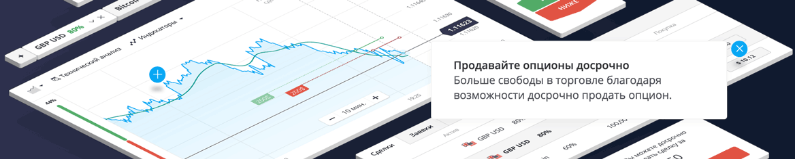

Меню
Меню Брокеры
Брокеры Стратегии
СтратегииOlymp Trade
 |
|
| Мин. депозит: 350 рублей | Активы брокера: 15 |
| Мин. ставка: 30 рублей | Валюта счета: рубли, доллары |
| Прибыльность: до 90% | Демо счет: Есть |
| Бонус: при пополнении +50% | |
| Пополенение счета: Visa, MasterCard, Вебмани, ЯндексДеньги, Neteller, Киви, Skrill, ePayments | |
| Вывод со счета: Visa, MasterCard, Вебмани, ЯндексДеньги, Neteller, Киви, Skrill, ePayments | |
Данный материал мы посвятим обзору возможностей сайта Олимп Трейд, предлагающего услуги трейдинга опционами. Компания официально сертифицирована международной Финансовой Комиссией. Компания предоставляет страховое покрытие сделок в пределах $20000 (такое покрытие распространяется на каждую сделку в случае разрешения спора между трейдером и брокером в пользу первого, на условиях наличия членства Olymp Trade категории «А» в FinaCom).
В Olymp Trade утверждают, что платформа является эксклюзивной разработкой, выполненной собственными силами программистов компании.
- Данный момент существенно уменьшает риски возникновения технических сбоев работы системы официального сайта Олимп Трейд. Общий вид и возможные функции схожи с классическими популярными платформами, и понятны всем, кто торговал опционами.
Как работает сайт Олимп Трейд?
С первого впечатления, комфортный функционал платформы Олимп Трейд, ничем особым не выделяется. Однако при пользовании ресурсом, можно увидеть несколько приятных добавлений, создающих дополнительный комфорт и удобство для пользователя. Например, когда без денег закрывается опцион, то тут же всплывает окно, предоставляющее нужные сигналы, либо помогающее войти в обучающий режим.
Только после быстрой регистрационной процедуры предоставляется доступ к проверке возможностей ресурса.
В Олимп Трейд работают с классическим типом опционов: «ниже/выше», период экспирации от 1 минуты, и возможность работы на шести таймфреймах (начиная с 1 мин и до 1 часа). Для приобретения сделки тут нужно затратить минимум 1 USD, а нижний предел депозита равняется 5 USD.
Положительным моментом является возможность работы с мобильной версией под Андроид или iOS. Пока перечень торгуемых активов на Олимп Трейд не очень впечатляет, но он постоянно пополняется. Сейчас тут предлагают работу с:
- 35 валютными парами;
- 11 индексами;
- 13 видами акций;
- 6 сырьевыми ресурсами (в т.ч. нефтью, золотом и серебром);
- 6 типами ОТС пар.
Статус ВИП-клиента получают торговцы, перечислившие на депозит 2 тыс. USD, он предполагает ряд привилегий:
- 80% выплат по всем типам активов;
- возможность досрочного закрытия операции, когда остается больше четверти времени до установленного термина экспирации.
- мгновенный взвод заработанных средств;
- возврат до 60% сумм убыточных операций;
- доступность безрисковых сделок;
Олимп Трейд обучение и демо
Бесплатная работа с демо счетом является важным достоинством сайта Олимп Трейд. Он автоматически открывается для каждого клиента после проведения регистрации. Чтобы опробовать функционал платформы вполне достаточно зачисленной виртуальной суммы в 10 тыс. USD на демонстрационный счет. Минусом является то, что когда «потрачены» все виртуальные средства, то пополнить их уже никак нельзя. Работать с демо-счетом можно и после внесения денег на реальный депозит, что в дальнейшем открывает возможности для испытании новых стратегий.
Официальный сайт Олимп Трейд предлагает 2 полезных раздела «Аналитика и «Обучения». В последнем – есть удобный календарь событий, графики для теханализа, а также информативные сигналы, предоставляемые известной площадкой Investing (dot) com. В «Обучении» клиенты найдут словари терминов, массу видеоматериалов, раскрывающие разные аспекты работы с опционами, а также множество полезных советов. Компания регулярно организовывает вебинары с ведущими трейдерами, предлагающими важную информацию и полезные рекомендации.

Жалобы и отзывы об Olymp Trade
О деятельности Олимп трейд в сети не встречаются серьезные жалобы или негативные отклики. Компания является регулируемой и сообщает о полученных соответствующих лицензиях. Однако это не 100% гарантия, поскольку фирма достаточно «молодая». На форумах есть множество нерекламных отзывов, дающих понять, что деньги из этой платформы реально выводятся. Это позволяет сделать вывод, что свои обещания компания, скорее всего, выполняет.
Вывод средств с ОлимпТрейд
5-ти дневный термин обработки заявки на вывод средств оговорен в условиях работы, а реально – можно вывести и за 1-2 дня. Вывод может осуществляться на ту же карточку или виртуальный счет, с которых происходило зачисление на депозит. Система выводит деньги через банковские переводы, а также по сервисам Qiwi, Yandex.Деньги, Webmoney или Neteller. При отправке крупных сумм может потребоваться верификации личности, с подтверждением персональных документов.
Бонусы
Клиентам предлагаются бонусы до 50% (размер зависит от суммы пополнения) К примеру, если клиент вносит 2 тыс. USD, то ему на счет будет дополнительно зачислено еще 30%. Для минимальных зачислений (5 USD или 350 RUB) бонусы не предусмотрены. В Олимп Трейд нельзя вывести сами бонусы, но можно получить прибыль, заработанную с их помощью. Если клиент выводит средства со счета до момента достижения оборота на своем счету в 25 раз превосходящего размер полученного бонуса, сумма самого бонуса будет отминусована с депозита.
Результаты и оценки платформы Олимп Трейд
- Удобство пользования — 9.5/10
Сайт Олимп Трейд комфортен, но поддерживает меню только на русском, английском и тайском языках. Минусом является то, что для ознакомления с платформой нужно пройти регистрационную процедуру.
- Число активов и время экспирации 9.5/10
Пока на платформе ОлимпТрейд маловато активов. Предлагаемые варианты временных интервалов более подходят для краткосрочного трейдинга.
- Комиссионные, техподдержка и вывод средств — 9.8/10
Сам Olymp Trade комиссий не снимает. Довольно оперативно (в круглосуточном режиме) работает сервис техподдержки, с русскоговорящими специалистами. Можно общаться в online-чате по телефону или через e-mail. Показатель выплат 80% — соответствует среднему по рынку.
- Пополнение, вывод средств и бонусы — 10/10
Привлекательны небольшие минимумы: 5 USD депозит и 1 USD – стоимость опциона. Можно вывести средства через Qiwi, Вебмани, Yandex.Деньги или Neteller. Система бонусов проста и понятна. Бонусы выводить нельзя, для их использования нужно выполнить ряд условий.
- Особенности — 9.5/10
Отличительной особенностью Олимп Трейд является собственная платформа. Есть удобный демо-счет и качественная аналитика. Система доступна и в выходные.